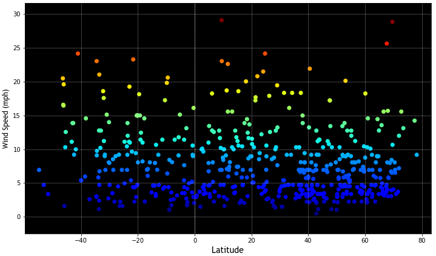

Wind Speed vs. Latitude

Wind speed does not appear to be related to latitude. No visible patterns emerge in this dataset.
It seems likely that other factors like elevation or region type (e.g. mountain range, valley, oceanfront, bay, etc.), have a greater influence on wind speeds.